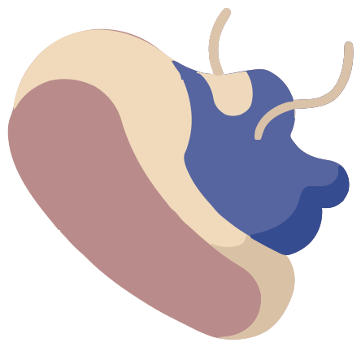

SATURDAY, OCT 24 · SAMPLE WALK
A little fresh air.
A lot of good steps.
Morning Lake Loop
DISTANCE
4.85 km

51:20Time outside
6,420Steps taken
10:35min / km
Your lakeside loop
4.85 km Start / finishIllustrated route
One loop. Your own pace.
Tap a kilometer to take a closer look.
A closer look
GPS · sample10:35min/km averageYour whole walk
Move the slider to explore each part of your walk.
Every kilometer
DistancePace / kmTime
How do you feel now?
Take a moment. There’s no right answer.
Anything worth remembering?A thought for next time
A little outside time, just for you.